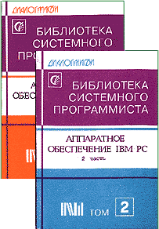

|  |
Аппаратное обеспечение IBM PC
© Александр Фролов, Григорий Фролов Учебно-справочное пособие по использованию драйверов и портов ввода/вывода различных устройств компьютера и составлению эффективных программ, использующих все особенности аппаратуры. В первой части подробно описаны клавиатура, мышь, таймер, часы реального времени, асинхронный адаптер, порт параллельной передачи данных. Во второй части подробно описан контроллер прямого доступа к памяти, арифметический сопроцессор. Большое внимание уделено использованию расширенной и дополнительной памяти. Для описанных устройств приводится методика программирования на всех уровнях - от использования портов ввода/вывода до высокоуровневых средств стандартных библиотек трансляторов Microsoft QuickC 2.5 и C 6.0. Книга содержит большое количество примеров, составленных на языках ассемблера и С. Дополнительно можно приобрести дискеты с примерами программ |
Оглавление
2. Клавиатура
3. Мышь
7. Принтер
7.7. Печать русских букв
10.1. Основные понятия
10.3. Спецификация XMS
10.5. Примеры программ
10.6. Интерфейс с Си
11.3. Вызов функций драйвера
11.4. Стандартные функции EMM
11.6. Коды ошибок
12. Арифметический сопроцессор
12.1. Вещественные числа
12.2. Целые числа
12.3. Регистры сопроцессора
12.6. Обработка особых случаев
14.1. Коды клавиатуры
14.5. Порты адаптера принтера
14.10. Содержимое файла sysp.h
14.11. Содержимое файла sysp.inc
14.13. Форматы данных сопроцессора